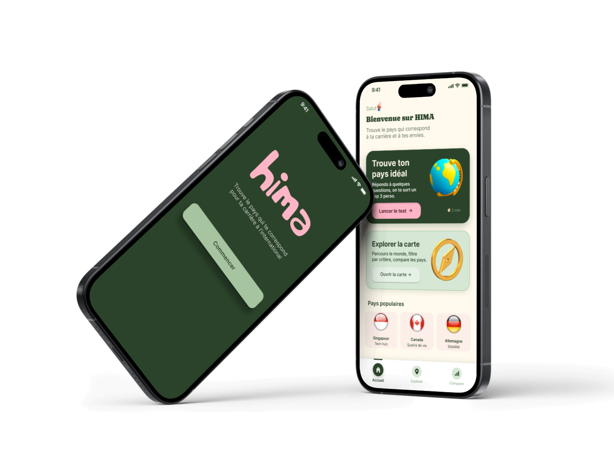

Contexte
La mobilité professionnelle à l’international attire de plus en plus d’actifs français souhaitant améliorer leur qualité de vie, leur rémunération ou découvrir de nouvelles opportunités de carrière.
Cependant, choisir un pays reste une décision complexe. Les différences de conditions de travail, de salaires, de sécurité de l’emploi et de cadre de vie varient fortement d’un pays à l’autre. À cela s’ajoutent des démarches administratives souvent longues et une recherche d’emploi difficile dans un environnement inconnu.
Face à ces obstacles, il devient essentiel de disposer d’un outil clair et fiable permettant de comparer facilement les pays et d’aider les utilisateurs à faire un choix éclairé en fonction de leurs besoins et de leurs objectifs professionnels.